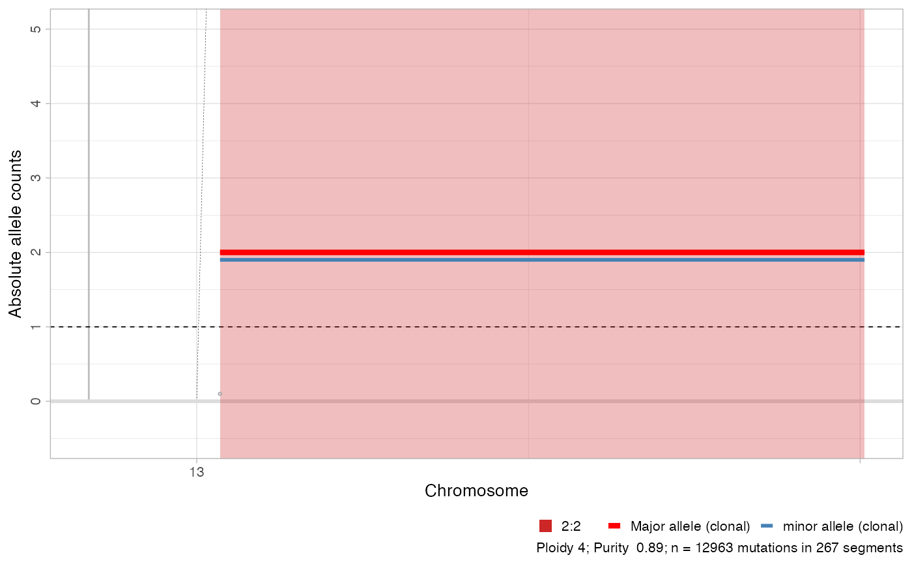

Plot CNA segments as Major/ minor allele, annotating
clonal and subclonal CNA calls in two different sets of colors.
This function uses hg19 genome coordinates to map CNA segments.
plot_segments(x, chromosomes = paste0("chr", c(1:22, "X", "Y")), max_Y_height = 6, circular = FALSE, cn = "absolute", highlight = x$most_prevalent_karyotype, ...)
Arguments
| x | An object of class |
|---|---|
| chromosomes | The chromosome to use for this plot. |
| max_Y_height | Maximum height for the Y-axis of the plot. Segments witht total copy
number (Major plus minor) above |
| circular | Uses a circular layout in polar coordinates to make the segments look like a circos plot. This visualisation can save space. |
| cn | Type of copy number segment to show on the plot. Either |
| highlight | A list of karyotype ids in |
Value
A ggplot object.
Examples
data('example_dataset_CNAqc', package = 'CNAqc') x = init(example_dataset_CNAqc$snvs, example_dataset_CNAqc$cna,example_dataset_CNAqc$purity)#> [ CNAqc - CNA Quality Check ] #>#> ℹ Using reference genome coordinates for: GRCh38.#> ℹ Drivers are annotated, but 'gene' column is missing, using mutation location.#> ! Missing CCF column from CNA calls, adding CCF = 1 assuming clonal CNA calls.#> ℹ Input n = 13141 mutations for 267 CNA segments (267 clonal, 0 subclonal)#>#> ✓ Mapped n = 12963 mutations to clonal segments (99% of input)plot_segments(x)#> #>plot_segments(x, chromosomes = 'chr13')